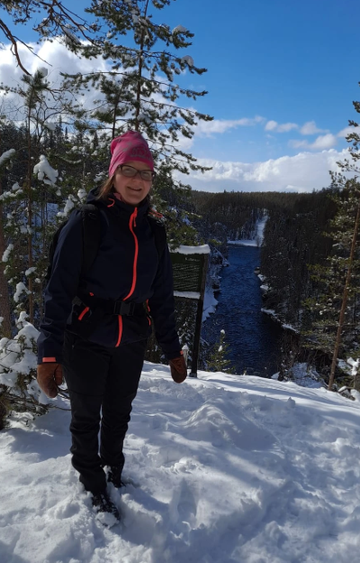

Kokonaisvaltaista hyvinvointia keholle ja mielelle

Olen Sirkka Karhumaa, vaimo ja neljän lapsen äiti.
Olen toiminut hermoratahieroja-yrittäjänä vuoden 2011 loppupuolelta saakka pienellä Vihannin kylällä. Olen saanut iloita ihanista asiakkaista, jotka ovat kerta toisensa jälkeen löytäneet hoitohuoneelleni, myös ympäristön kylistä ja kunnista. Kiitos Teille Kaikille!
Vuonna 2016 kävin vauvahierontakurssin voidakseni paremmin auttaa myös vauvoja.
Vuonna 2019 aloitin opiskelun tunnevyöhyketerapeutuksi ja valmistuin keväällä 2022.
Tavoitteenani on auttaa asiakkaitani saavuttamaan elämäänsä tasapainoa ja kokonaisvaltaista hyvinvointia, pääsemään eroon kivuista ja vaivoista sekä tasapainon palautumisen myötä pärjäämään paremmin sairauksien kanssa.